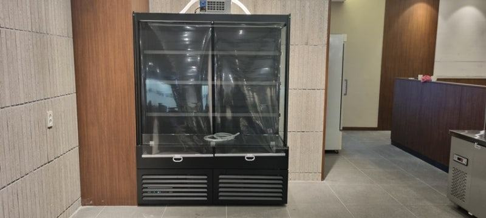
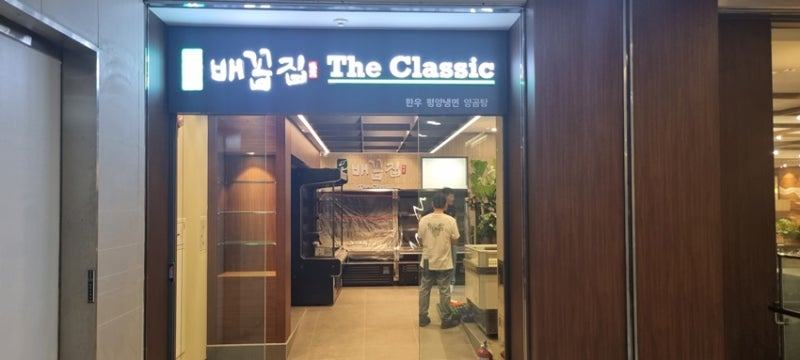
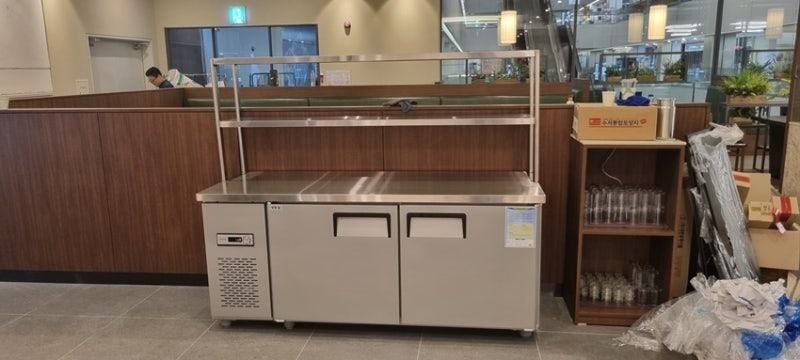
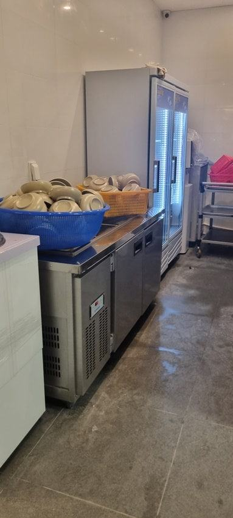
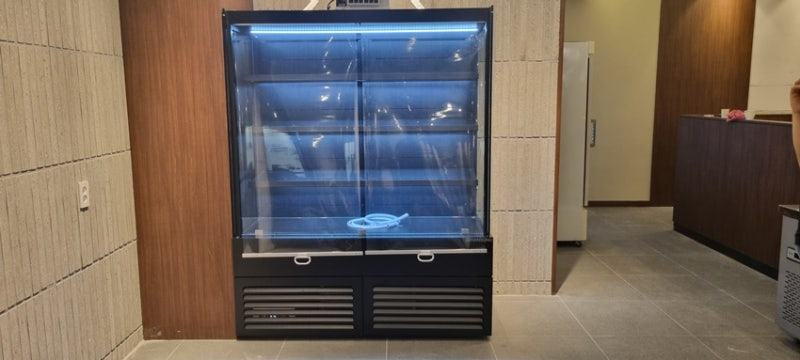
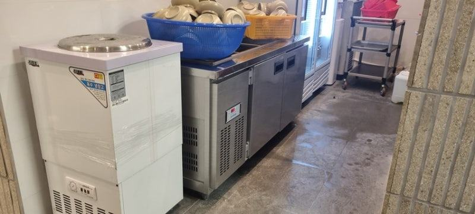
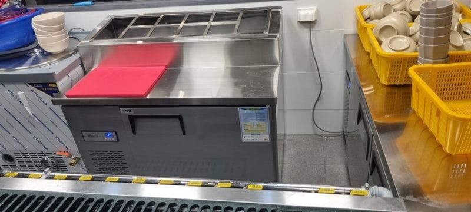
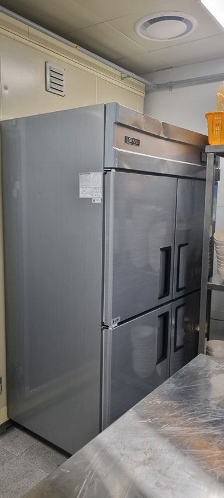
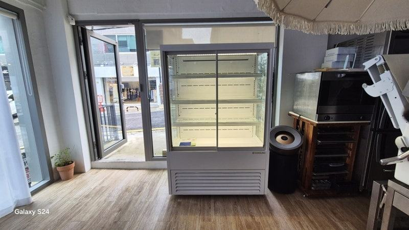

과일진열쇼케이스
과일쇼케이스 간냉식 직냉식, 과일 수분과 진열 시야로 고르기

통과일을 노출해 진열하고 촉촉함을 오래 지키는 것이 중요하다면 수분 손실이 적은 직냉식이, 컷과일 컵이나 포장 상품이 많고 유리가 늘 맑아야 하는 매장이라면 성에가 적은 간냉식이 잘 맞습니다. 한 매장에서도 진열 구역에 따라 두 방식을 나눠 쓰는 것도 방법입니다.
안녕하세요. 과일가게와 청과 매장의 진열 쇼케이스를 맞춤 제작하는 한성쇼케이스입니다.
과일쇼케이스를 알아보시는 사장님들이 마지막까지 고민하시는 것이 냉각 방식입니다. "과일은 수분이 중요하다던데 직냉식이 맞나요, 아니면 요즘 많이 쓰는 간냉식이 나을까요?" 하는 질문을 자주 받습니다.
과일은 수확 후에도 호흡하며 수분을 내보내고, 품목마다 냉기에 견디는 정도도 다릅니다. 그래서 일반 음료 쇼케이스처럼 한 가지 기준으로만 고르기 어렵습니다.
오늘은 과일쇼케이스에서 간냉식과 직냉식이 실제로 어떻게 다르게 작동하는지, 판매 구성별로 어느 쪽이 맞는지 정리해 보겠습니다.
1. 과일 입장에서 본 두 방식의 차이
직냉식은 바람을 세게 돌리지 않고 차가워진 벽면으로 내부를 식힙니다. 과일 표면에 바람이 계속 닿지 않으니 수분을 덜 빼앗기고, 껍질이 얇은 과일도 윤기를 비교적 오래 유지합니다.
대신 벽면에 성에가 생겨 정기적으로 제거해야 합니다.
간냉식은 팬으로 찬 공기를 돌려 내부 온도가 고르고 성에가 거의 없습니다. 다만 노출된 과일은 바람을 계속 맞아 표면이 마르기 쉬워, 진열 방법과 포장으로 보완해야 합니다.
어느 쪽이든 정답은 매장에서 파는 과일 구성에 달려 있습니다. 상담 때 주력 품목과 진열 방식을 알려 주시면 두 방식 중 어느 쪽이 더 맞는지 함께 따져 드립니다.
- 직냉식: 수분 유지 유리, 성에 관리 필요
- 간냉식: 온도 균일·유리 맑음, 건조 주의
2. 판매 구성별로 맞는 방식
포도, 딸기, 체리처럼 껍질이 얇고 그대로 진열하는 통과일 비중이 크다면 직냉식이 과일 상태를 지키기에 유리합니다.
손님이 과일 자체를 보고 고르는 매장이라 촉촉한 윤기가 곧 판매력이 됩니다.
컷과일 컵, 과일 도시락, 랩 포장 과일처럼 포장 상품이 중심이라면 간냉식이 잘 맞습니다. 포장이 수분 손실을 막아 주고, 손님이 자주 문을 열어도 온도 회복이 빨라 앞줄 상품까지 고르게 차갑게 유지됩니다.
유리에 성에가 끼지 않아 포장 상품의 라벨도 깔끔하게 보입니다.


3. 두 방식을 나눠 쓰는 매장
통과일과 컷과일을 함께 파는 매장이라면 굳이 하나로 통일하지 않아도 됩니다. 통과일은 직냉식 평대나 진열장에, 컷과일과 주스는 손님이 직접 꺼내는 간냉식 쇼케이스에 두는 식으로 구역을 나누면 각 상품에 맞는 환경을 만들 수 있습니다.
선물용 박스 과일은 포장돼 있어 어느 방식이든 무난하지만, 박스가 습기를 먹지 않도록 결로가 적은 쪽에 두는 편이 좋습니다.
- 통과일 구역과 포장 구역을 나눠 보세요.
- 선물 박스는 결로가 적은 자리에 두세요.
4. 고른 뒤 각각의 관리 포인트
직냉식을 쓰신다면 성에가 두꺼워지기 전에 정리하는 날을 정해 두세요. 성에 제거 날에는 과일을 잠시 다른 냉장 공간으로 옮겨 두면 작업이 편합니다.
간냉식을 쓰신다면 송풍구 바로 앞에 노출 과일을 두지 말고, 컷과일 컵은 뚜껑을 꼭 닫아 진열하세요.
바나나처럼 냉기에 약한 과일은 어느 방식이든 냉장 진열보다 상온 진열대를 함께 활용하는 편이 낫습니다.
체크리스트
- 통과일과 포장 상품의 비율
- 껍질이 얇은 과일 비중
- 손님이 직접 문을 여는지
- 구역별로 방식을 나눌지
- 직냉식 성에 정리 주기
- 간냉식 송풍구 앞 진열
간냉식으로 보이는 진열까지 맞춘 숙성고 사례
품목은 다르지만 간냉식을 선택한 과정을 보여 드리기 좋은 사례가 있습니다. 라셀르 간냉식 숙성고를 제작한 매장의 대표님은 주방뿐 아니라 손님이 눈으로 직접 확인할 수 있는 공간까지 고려해 달라고 요청하셨고, 프리미엄 이미지를 강조하고 싶다는 점도 함께 말씀하셨습니다.
숙성고는 온도, 습도, 공기 순환이 상품의 맛과 질감을 좌우하는 장비라, 이 요소들이 고르게 유지되도록 설계하고 디자인은 깔끔하게 정리해 설치했습니다.
과일쇼케이스도 상품이 보이는 진열 역할과 수분·온도 관리 역할을 함께 하는 장비라, 같은 기준으로 냉각 방식을 고르시면 됩니다.










자주 묻는 질문
간냉식인데 과일이 쭈글쭈글해져요.
송풍구 바람이 직접 닿는 자리에 노출 과일을 두었을 가능성이 큽니다. 자리를 옮기거나 포장해서 진열해 보시고, 내부 수분 환경도 함께 점검해 보세요.
직냉식 성에 때문에 과일이 안 보일 때가 있어요.
성에가 유리 쪽까지 번진다면 정리 주기를 앞당기고, 문을 여는 시간을 줄여 보세요. 계속 심하다면 설치 자리의 습도와 장비 상태를 점검받아 보시는 것이 좋습니다.
작은 과일가게라 한 대만 들여야 한다면요?
판매 상품 중 비중이 큰 쪽을 기준으로 고르세요. 통과일 위주면 직냉식, 컷과일·포장 위주면 간냉식을 먼저 검토해 보시면 됩니다.
매장 조건에 맞춰 만드는 한성쇼케이스
원하시는 제품 사진과 설치할 공간 사진만 보내 주셔도 매장에 맞는 구성을 추천해 드립니다.
- 전국 240여 개 A/S 전담 센터 운영
- 본사 대량 자재 매입으로 품질 대비 합리적인 가격
- 유럽제·삼성 냉각 콤프레셔 적용
- 국내 최초 쇼케이스 전문 디자이너 상주
매장 폭과 원하는 진열 구성을 알려 주세요. 실측과 견적을 안내해 드립니다.
031-986-2458